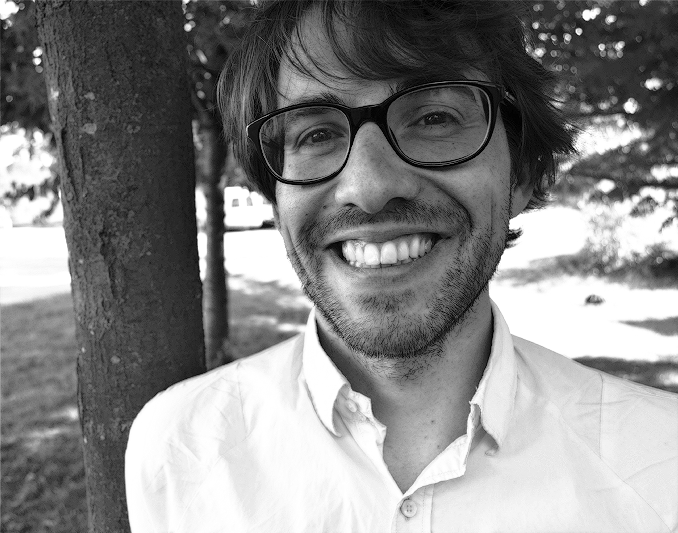

|  | Experienced Researcher Färögatan 6 |
In February 2015 I joined Ericsson Research as an Experienced Researcher in Future Devices and Technologies
On the 24th of October 2014, I defended my PhD thesis on Design, Implementation and Validation of Resource-Aware and Resilient Wireless Networked Control Systems with Prof. Jan Lunze as the opponent and Prof. Luis Almeida, Docent Anton Cervin, and Docent James Gross as the evaluation committee
Check out my publications page and my google scholar page for more information on my past and current research.